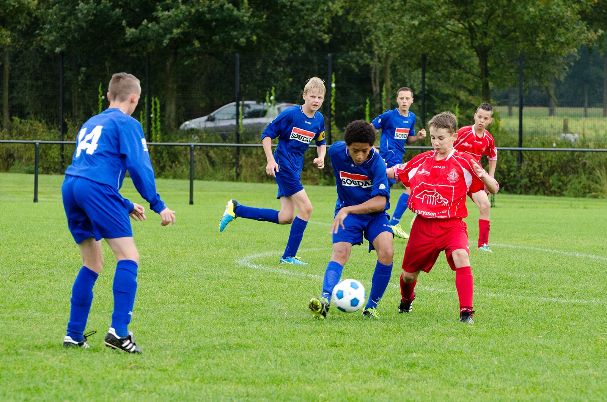
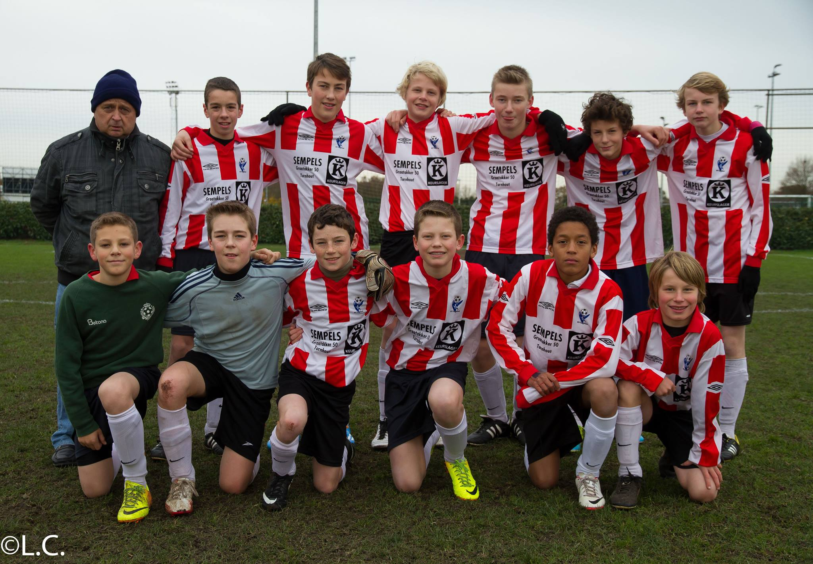

Interesses
Mijn eerste liefde - The wonderful game
Sinds jongs af aan was ik altijd al in de ban van voetbal. Op mijn 8ste bracht mijn vader me voor de eerste keer naar een voetbaltraining bij een lokale club, waar ik onmiddellijk 5 goals tegen de netten schopte. Van hieruit groeide mijn passie voor de sport exponentieel.Vanaf mijn 8 tot mijn 12 heb ik bij Oud-Turnhout gespeeld. Hierna ben ik op talentenjacht gegaan bij KV Turnhout, waar ik een geslaagde testdag achter de rug had. Dit jaar ben ik dan naar Turnhout gegaan om in 2de nationale te beginnen voetballen.
De druk stijgt
het middelbaar was er een bekend toernooi. Dit toernooi was het fameuze scholenvoetbal. Enkel de beste voetballers van de school mochten het opnemen tegen andere scholen om het uiteindelijk zo ver mogelijk proberen te schoppen en voor de beker te voetballen. Ons team was ongelofelijk goed en we wonnen alles. Op een gegeven moment moesten we zelfs tegen de academie van Gent spelen, hierdoor mochten we af en toe vroeger weg uit de les omdat dit wel een eindje reizen was!
Rond mijn 18de ben ik gestopt met voetbal omdat het leven erg veel van me vroeg: School, relaties en andere dingen zorgden ervoor dat ik gewoonweg geen tijd en moeite meer kon vinden om mijn passie te onderhouden. Door de jaren heen begon ik ook minder en minder genot te halen uit voetbal.
Sinds Augustus dit jaar ben ik terug begonnen met voetballen. Ik moet eerlijk toegeven dat dit beter dan ooit voelt. Voetbal is en blijft mijn passie, er zijn weinig dingen waardoor ik evenhard kan ontsnappen aan de realiteit als met voetbal.
Overzicht carriere
- 2008-2012: Oud-Turnhout gewestelijk
- 2009-2016: KV Turnhout nationale
- 2016-2018: KFC Turnhout gewestelijk
- 2022-heden: KFC Zwaneven Provinciale